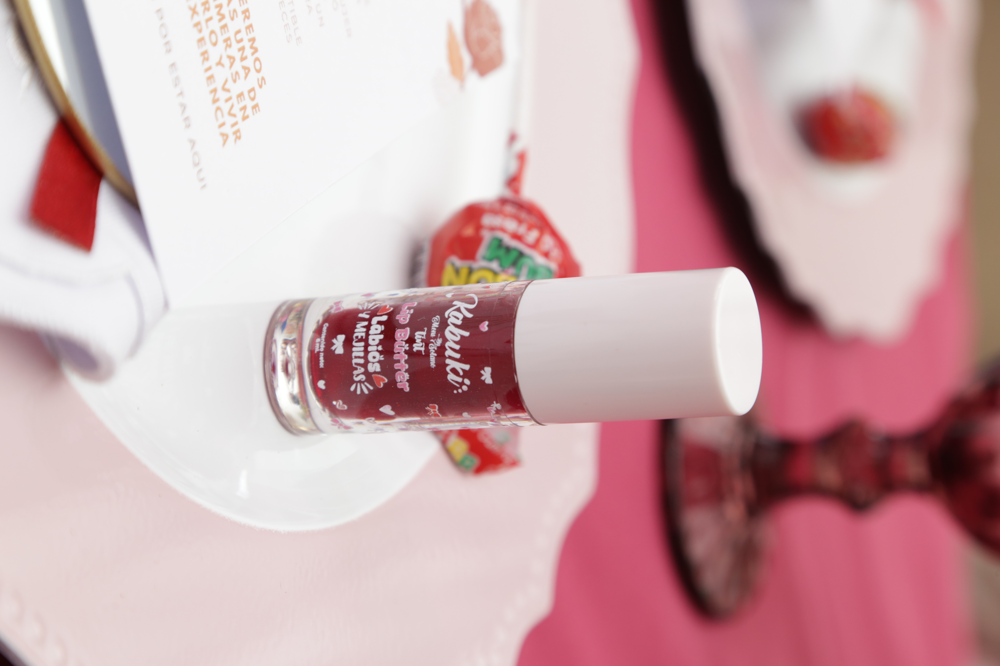

Presentaciones
Un toque de color puede transformar tu día. Tinta Kabuki By Moni Solano fue creada para resaltar tu belleza natural con una pigmentación intensa, textura ligera y una experiencia que enamora desde la primera aplicación.
Hidratación • Alta pigmentación • Larga duración


